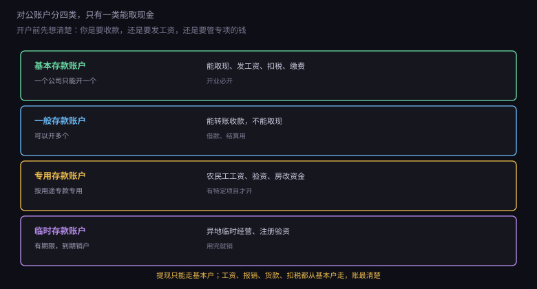
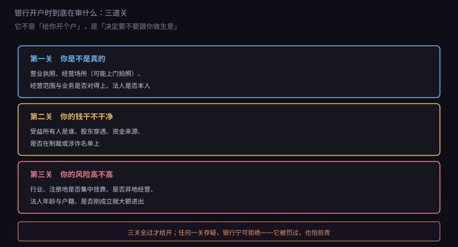
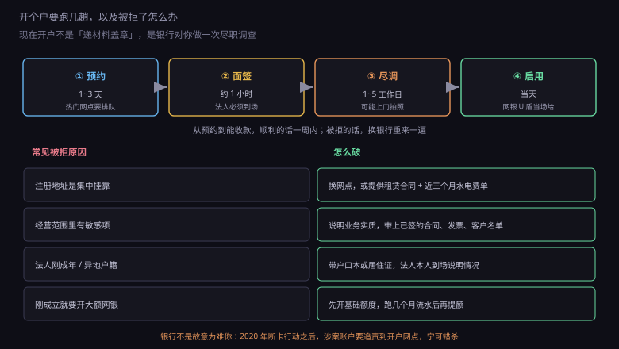

约 0.34 万字 · 3 张图 · 你以为在办业务，银行以为在做尽调
先纠正一个直觉。很多人把对公户理解成"公司的储蓄卡"， 存钱、取钱、转账。实际上它的性质完全不同。
个人账户是银行欠你钱——你存进去的是你的财产， 银行只是一个保管和支付的通道。
对公账户是银行给企业提供的一项服务， 里面每一笔钱都要有来源和用途的说明。 银行不是"替你保管"，是替你过账，并且对过账的合法性负责。
这个差别带来三个后果：
一是不能随便取现。 对公户取现要填用途，大额要预约，还要说明是发工资还是采购。 而且只有基本户能取现，一般户根本不行。
二是不能随便借给个人。 公司账户转钱给股东个人，会被视为分红（要交 20% 个税） 或者借款（要有合同、要还）。 长期挂账不还，税务会认定为变相分红。
三是银行会盯你。 同一笔钱进来又立刻转出、频繁与个人账户互转、 夜间大额进出——这些都会触发反洗钱模型， 轻则电话核实，重则冻结账户。
对公账户不是一个，而是一套，分四种用途。

基本存款账户：一家公司只能开一个。 它是你的"主账户"，能取现、发工资、扣税、缴社保。 办执照之后第一个要开的就是它。
一般存款账户：可以开多个。 比如你在 A 银行有基本户，客户要求用 B 银行收款， 就在 B 开一个一般户。 它能转账收款，但不能取现。
专用存款账户：按特定用途管理。 最常见的是农民工工资专户（建筑行业强制）、 商品房预售资金监管户、验资户。 这类账户的钱只能用于指定用途，挪用是违法的。
临时存款账户：有期限，到期必须销户。 用于异地临时经营（比如去外地办展销会）、 或者注册验资（现在认缴制下很少用了）。
实操上，小公司开一个基本户就够了。 等业务做大、需要分账管理，再考虑开一般户或专户。
现在讲重点：开户时银行到底在看什么。

第一关：你是不是真的存在。
营业执照、公章、法人身份证是最基本的。 但银行还会做几件事： 查企业信用信息公示系统，看有没有异常； 打电话核实注册地址（有些会实地拍照）； 问你的业务模式、主要客户、预计流水。
如果注册地址是那种"一址几百家公司"的托管地址， 银行会很警惕——这是空壳公司最典型的特征。 不是不能开，但要补充更多材料证明你在真实经营。
第二关：你的钱干不干净。
这一关是反洗钱的要求，核心是识别受益所有人： 这家公司最终是谁在控制、谁在受益。
股权简单的，看股东是谁就行。 股权复杂的（多层嵌套、外资、信托），要一层层穿透到自然人。 如果股东是一家公司，还要看那家公司背后的股东。
银行还会查：股东和法人是否在制裁名单、涉诈名单上， 有没有关联企业被列入异常，资金来源是否说得清。
第三关：你的风险高不高。
这一关是打分，看的是组合特征：
行业（虚拟货币、跨境贸易、珠宝、预付卡、游戏点卡，都是高风险）
注册地（某些地区的集中注册地址会被整体降分）
法人特征（刚满 18 岁、异地户籍、名下关联多家企业）
经营痕迹（刚成立就要开大额网银，或者一开户就有大额进账）
分数太低，银行会拒绝，或者给你开一个"限额版"账户： 单日转账上限几千到几万，只能临柜办理。
十年前开对公户很简单：带执照和章去，半小时办完。 现在要预约、要尽调、要等几天，还可能被拒。
转折点是 2020 年 10 月的"断卡行动"。
当时电信诈骗猖獗，骗子需要大量银行账户来收款、分散转账。 这些账户从哪来？买卖的。 有人专门去注册空壳公司、开对公户，然后整套卖给诈骗团伙， 一套能卖几千到上万。
断卡行动就是切这条链：谁开的户涉案，追责到开户网点和经办人。
后果很直接：一家支行如果开出几个涉案账户， 可能被暂停新开户业务三个月、罚款、扣绩效， 经办客户经理要被处分。
于是银行的行为彻底变了：宁可错杀，不可放过。 材料多要一份、地址多跑一趟、流水多问几句， 对一个真实创业的人来说是麻烦， 对银行来说是自保。
理解了这一层，你被拒的时候就不会觉得是"柜员看我不顺眼"。 它只是不想为一个陌生人的账户承担风险。 应对的办法不是吵，是提供更多"我在真实经营"的证据。
顺利的情况下，从预约到能收款大概一周。

预约：现在多数银行要线上预约， 热门网点排队一周很常见。小网点反而快。
面签：法定代表人必须本人到场， 带身份证原件，录像、签字、回答几个问题。 这一步不能代办，找中介"包开户"是违规的。
尽调：银行内部审核，可能上门看办公场所， 也可能打电话给你的客户核实。 这段时间账户是"只收不付"或者干脆没启用。
启用：拿到开户信息、网银 U 盾、回单卡， 账户可以正常用了。
被拒了怎么办？先问清楚原因（银行有义务告知）， 能补材料就补，补不了就换一家。 不同银行、不同网点的尺度差别很大， 同一套材料在 A 行被拒，在 B 行可能当场就过。
基础清单：
| 材料 | 说明 |
|---|---|
| 营业执照正本 | 原件，复印件也行但要盖章 |
| 法定代表人身份证 | 原件，本人到场 |
| 经办人身份证 | 法人自己去就不用 |
| 公章、财务章、法人章 | 三枚都要带 |
| 公司章程 | 看股权结构，用于识别受益所有人 |
| 股东名册 / 出资证明 | 股权复杂的会被要求提供 |
| 经营场所证明 | 租赁合同、水电费单、门头照片 |
加分材料（有就带上，能显著提高通过率）： 已签订的合同、发票、客户名单、 社保缴纳记录、纳税申报记录、 公司门头或办公环境的照片。
这些东西的共同点是：能证明你在真实经营，而不是一个壳。
账户开出来不等于随便用。有几条日常限制要习惯。
非柜面限额。 新开户的网银、手机银行通常有额度限制 （单日几万、单月几十万），跑一段时间流水后可以申请提高。 这是防诈骗的设计，不是针对你。
大额取现要预约。 超过一定金额（各银行不同，常见 5 万起）要提前一天预约， 还要说明用途。
久悬账户会被清理。 一年以上没有收付活动、也没欠费的账户， 银行会通知你销户，联系不上就直接转为久悬， 影响你在这家银行开新户。
要对账。 银行每月或每季发对账单，你要核对余额。 长期不核对，出了问题责任在你。 现在多数银行支持网银自助对账，点一下就行。
账户管理费。 多数银行对小额账户收年费（几十到几百）， 有些银行对小微企业的第一个账户免收。 开户时问一句，能省则省。
还有一种情况要提前知道：账户可能被"误伤"冻结。
反洗钱和反诈模型是机器判断的，规则很粗： 短时间内多笔小额进账、刚开户就大额转出、 交易对手里有涉诈账户——命中任何一条，系统就可能自动止付。
被冻之后，钱还在，但只能进不能出。 解除的办法是带着合同、发票、聊天记录去网点说明交易背景， 银行核实后报反诈中心审核，快的一两天，慢的两三周。
避免被误伤的实用做法： 新账户前三个月不要"快进快出" （钱进来当天就全额转走，最像洗钱）； 大额收款前跟客户经理打个招呼； 保留完整的交易凭证（合同、发票、发货单）。 这三条做到，绝大多数麻烦都能避免。
那选哪家银行？给四条判断标准。
一是就近。 开户之后你还要去柜台办事：取现、领回单、改限额、解冻。 离公司或住处二十分钟以内，能省很多时间。
二是费用。 问清账户管理费、网银年费、转账手续费（对公转账很多银行是收费的， 按笔或按金额比例，跨行更贵）。小公司一年几百到几千的差别。
三是风控尺度。 大行合规严、流程长、限额紧；股份行和城商行相对灵活； 村镇银行最松，但网点和系统体验差。 如果你业务简单、流水不大，城商行往往更好谈。
四是后续需求。 将来可能要贷款、要开保函、要做结汇， 提前想一下哪家银行在这些方面有优势。 有授信关系的银行，办事会顺很多。
开户时会给你一套网银工具：U 盾（或蓝牙 key）、回单卡、密码函。 日常转账、查询、对账、开票信息维护都在网银上做。
如果以后要写程序自动收款、自动对账，会用到两个东西：
企业网银的 API。 部分银行提供开放接口，可以查余额、查流水、 发起支付（需要证书签名）。 门槛较高，一般要存款或流水达标。
银企直连。 企业自己的系统直接连银行核心系统， 实时性最好，但要专线、要银行审批、要年费， 通常是日流水百万级才值得上。
小公司用不上这些。 真要自动化，最实用的方案是： 用支付机构（微信、支付宝、Stripe）的商户接口收款， 银行账户只做资金归集和付款。 对账靠支付机构的账单 API，比银行接口好用得多。 这一块 8.5 会讲。